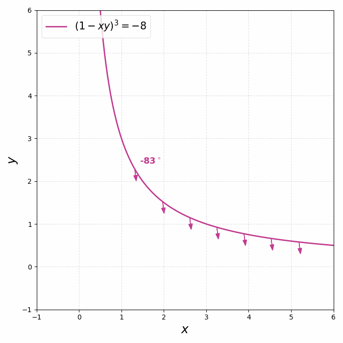
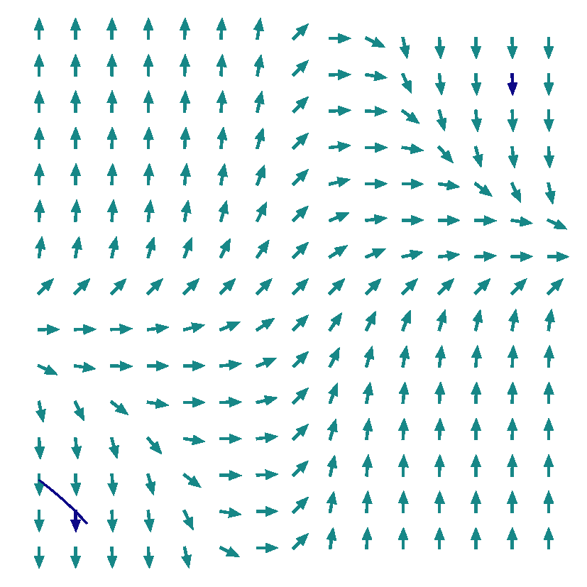

Cubic Isoclines — \( f(x,y) = (1-xy)^{3} \)
The surface
For
\( y' = (1-xy)^{3} \)
the slope surface \( z=(1-xy)^{3} \) is far less obvious than a plane or a paraboloid — the rotation reveals its saddle-like shape.

The isoclines

Setting \( (1-xy)^{3} = C \) gives \( xy = 1 - \sqrt[3]{C} \) — a family of hyperbolas (and the line pair \( xy=1 \) for \( C=0 \), the nullcline).
Isoclines on the field
Overlaying the hyperbolas on the direction field shows each one carrying segments of a single slope.

Solutions

Solution curves follow the field, steep where \( |1-xy| \) is large and flat along the nullcline \( xy=1 \).